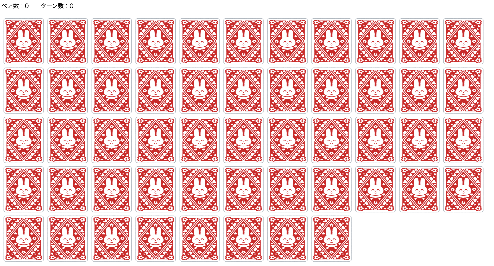
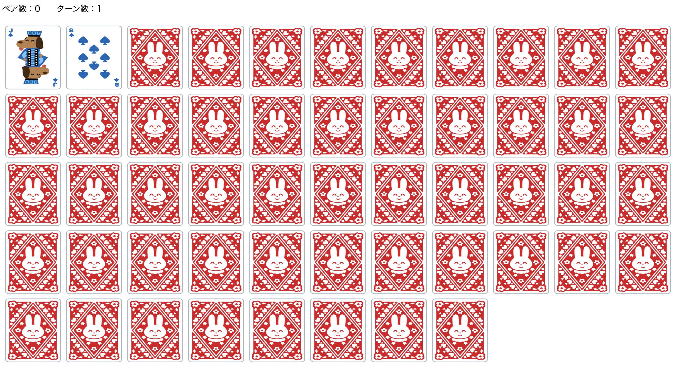
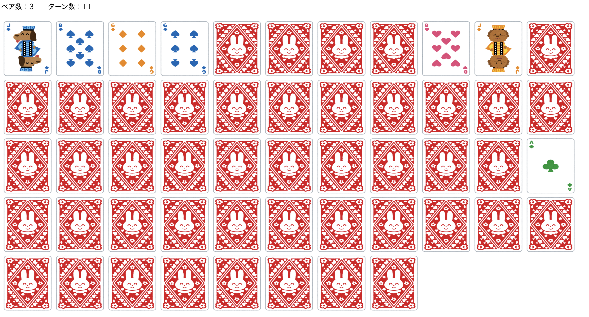
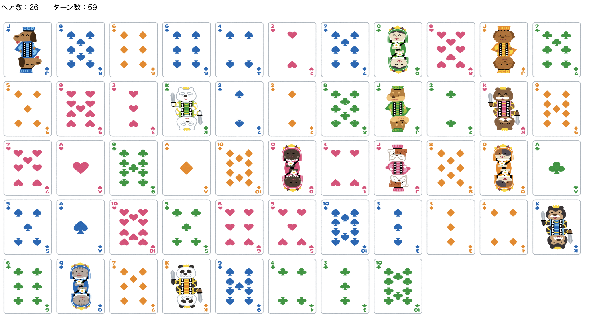

神経衰弱
【内容】
神経衰弱のアプリです
柄は関係なくカードをめくり同じ数字を揃えてください
2枚めくるとターン数が1増え数字が揃っていない場合は裏面に戻ります

【構成】
ページを開いた段階で「new」というパラメータが送信されてゲームが開始し、
2重ループでPlayingCardsインスタンス
(①String型で柄, ②int型で数字, ③int型でめくられているかのフラグ値,
④boolean型でペア成立しているかのフィールドを持つ)を
カードの枚数分52枚作成する。
↓
1~13と規則正しく並んでしまっているので、
Collectionsクラスのshuffleメソッドで順番をまぜて、
セッションに登録して表示する。
↓
カード選択時に「select」というパラメータが送信されて、
ゲーム開始時と区別をする。
パラメータから選択カードを受け取り、③のフラグ値を変更する。
selectCards(1, 2枚目に選ばれたカードを格納するArrayList)をセッションから受け取る。
↓
selectCardsが
・0枚なら1枚目としてselectCardsに追加
・2枚なら破棄して今回の選択カードをselectCardsに追加
※ここで破棄しないと2枚目選択時に2枚目が表にならずに次ターンになってしまう
・1枚なら今回の選択カードと数字がいっしょかを判定し、
一緒ならペア値をtrueに変更する。
を繰り返します。


【工夫や学び】
最初は①の柄についてもint型でフラグにした。
しかし画像表示のためのaタグにおいて、
フラグが0ならspade, 1ならclub
といったif文を4つ追記する必要が出たためString型の値にした。
また同様にカードの保存名も「spade01」だったものを、
このままだと
インスタンスが持つ数字が9以下なら0を追記する
というif文を追加しないといけないため少し気持ち悪いが「0」が削除した。
他にもめくったカードをもう一度押して選択できるとややこしいので、
選択できないようにしたり【構成】の ※ の箇所など、
様々な工夫を凝らすことができて作成して楽しむことができた。
